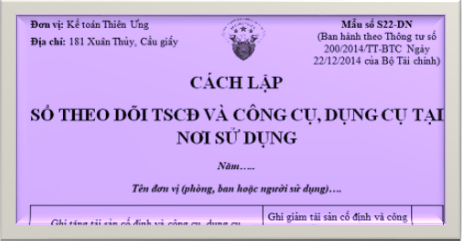

Hướng dẫn cách lập Sổ theo dõi Tài sản cố định và Công cụ dụng cụ tại nơi sử dụng theo Thông tư 200 và 133 – Mẫu S22-DN (S10-DNN) Sổ theo dõi TSCĐ và CCDC dùng để ghi chép tình hình tăng, giảm TSCĐ và CCDC tại từng nơi sử dụng nhằm quản lý tài sản và dụng cụ đã được cấp cho các phòng, ban làm căn cứ để đối chiếu khi tiến hành kiểm kê định kỳ.
- Mỗi đơn vị hoặc bộ phận (phân xưởng, phòng ban...) thuộc doanh nghiệp phải mở một sổ để theo dõi tài sản. Căn cứ vào chứng từ gốc về tăng, giảm tài sản để ghi vào sổ tài sản theo đơn vị sử dụng như sau:
------------------------------------------------------------------
|
Đơn vị: Kế toán Diệu Tâm Địa chỉ: 181 Xuân Thủy, Cầu giấy |
Mẫu số S22-DN (Ban hành theo Thông tư số 200/2014/TT-BTC Ngày 22/12/2014 của Bộ Tài chính) |
SỔ THEO DÕI TSCĐ VÀ CÔNG CỤ, DỤNG CỤ TẠI NƠI SỬ DỤNG
Năm…..
Tên đơn vị (phòng, ban hoặc người sử dụng)….
Năm…..
Tên đơn vị (phòng, ban hoặc người sử dụng)….
| Ghi tăng tài sản cố định và công cụ, dụng cụ | Ghi giảm tài sản cố định và công cụ, dụng cụ | Ghi chú | ||||||||||
| Chứng từ | Tên, nhãn hiệu, quy cách tài sản cố định và công cụ, dụng cụ | Đơn vị tính | Số lượng | Đơn giá | Số tiền | Chứng từ | Lý do | Số lượng | Số tiền | |||
| Số hiệu | Ngày, tháng | Số hiệu | Ngày, tháng | |||||||||
| A | B | C | D | 1 | 2 | 3=1x2 | E | G | H | 4 | 5 | I |
|
Ghi số hiệu của chứng từ tăng tài sản cố định và công cụ, dụng cụ. |
Ghi ngày tháng của chứng từ tăng tài sản cố định và công cụ, dụng cụ. | Ghi tên nhãn hiệu TSCĐ và công cụ, dụng cụ | Ghi đơn vị tính (cái, chiếc...) | Ghi số lượng | Ghi nguyên giá TSCĐ hoặc đơn giá công cụ, dụng cụ | Ghi số tiền (Cột 3 = Cột 1 x Cột 2) | Ghi số hiệu của chứng từ ghi giảm tài sản cố định và công cụ, dụng cụ. | Ghi ngày tháng của chứng từ ghi giảm tài sản cố định và công cụ, dụng cụ. | Ghi lý do giảm tài sản cố định và công cụ, dụng cụ. | Ghi số lượng tài sản cố định và công cụ, dụng cụ giảm. | Ghi nguyên giá tài sản cố định và giá trị công cụ, dụng cụ giảm. | |
- Sổ này có ... trang, đánh số từ trang 01 đến trang ...
- Ngày mở sổ: ...
|
Người lập biểu (Ký, họ tên) |
Kế toán trưởng (Ký, họ tên) |
Ngày ... tháng ... năm ... Giám đốc (Ký, họ tên, đóng dấu) |
------------------------------------------------------------------
Ghi chú: Đối với trường hợp thuê dịch vụ làm kế toán, làm kế toán trưởng thì phải ghi rõ số Giấy chứng nhận đăng ký hành nghề dịch vụ kế toán, tên đơn vị cung cấp dịch vụ kế toán.Tải mẫu Sổ theo dõi TSCĐ và CCDC theo Thông tư 200 word:
Tải Mẫu Sổ theo dõi TSCĐ và CCDC theo Thông tư 133 word:
Tải Mẫu Sổ theo dõi TSCĐ và CCDC trên Excel theo TT 200 và 133:
Trường hợp bạn không tải về được thì làm theo cách sau:
Bước 1: Comment mail vào phần bình luận bên dưới
Bước 2: Gửi yêu cầu vào mail: ketoandieutam@gmail.com (Tiêu đề ghi rõ Mẫu sổ muốn tải)
Xem thêm: Cách lập sổ tài sản cố định
------------------------------------------------------------------
